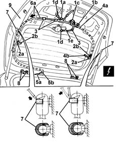

7210E56 R.R. TAILGATE
- Path
- Procedures > 72 PANELS AND FRAME > 7210 REMOVING REFITTING > 7210E external parts > 7210E56 R.R. TAILGATE
- Kind
- repair procedure (removal / refitting; the operation number is the code)
- Applies to
- all engines; all production periods
- Interactive page
- https://sloeber94.github.io/elrnDB-lYpsln/en/#/2429741
Applies to: all engines; all production periods
 Removing
Removing
 Refitting
Refitting7015A04 tailgate interior panel - r+r
5550D16 third stop light - r+r
7015B10 single tailgate lock - r+r or repair with panel/protection removed
1. Disconnect the electrical connections (1a, 1b, 1c, 1d, 1e).
 | Name | Connector |
|---|---|---|
1a | Left number plate light |
| Name | Connector |
|---|---|---|
1b | Right number plate lgiht |
| Name | Connector |
|---|---|---|
1c | Switch on boot outer handle |
| Name | Connector |
|---|---|---|
1d | Switch on boot outer handle |
| Name | Connector |
|---|---|---|
1e | Rear window wiper motor |
2. Undo rubber covers (2a) and disconnect the heated rear window electrical connections (2b).
| Name | Connector |
|---|---|---|
2b | Heated rear windscreen |
| Name | Connector |
|---|---|---|
2b | Heated rear windscreen |
3. Disconnect the wiring from the retainers.
4. Connect a probe to one end (4a) of the wiring and a probe to end (4b) to help refit the wiring.
5. Prise wiring channel (5a) out of the hole (5b) on the tailgate.
6. Remove wiring (6a) from the tailgate through hole (5b).
7. Support the tailgate and, using a screwdriver, prise off (without detaching) the upper lift device retaining clips.
8. Undo the hinge bolts.
9. Remove the tailgate.

Applies to: all engines; all production periods
Refitting
RemovingCheck the tailgate is undamaged.
Position the tailgate and screw in the hinge bolts without tightening.
Attach the support devices and fit the springs.
Refit the wiring inside the tailgate using the probes fitted previously.
Fit the wiring channel and secure the wiring to the retainers.
Connect all the electrical connections.
7015B10 single tailgate lock - r+r or repair with panel/protection removed
5550D16 third stop light - r+r
7015A04 tailgate interior panel - r+r
7015A14 tailgate - adjust centring and profile - includes hinge and compartment seal adaptation
Topics linked from this page (11)
- 5550D16 third stop light - r+r
- 7015A04 tailgate interior panel - r+r
- 7015A14 tailgate - adjust centring and profile - includes hinge and compartment seal adaptation
- 7015B10 single tailgate lock - r+r or repair with panel/protection removed
- F50 Left number plate light
- F51 Right number plate lgiht
- I33A Switch on boot outer handle ( REAR )
- I33B Switch on boot outer handle ( REAR )
- N16 Rear window wiper motor
- P55A Heated rear windscreen ( REAR )
- P55B Heated rear windscreen ( REAR )